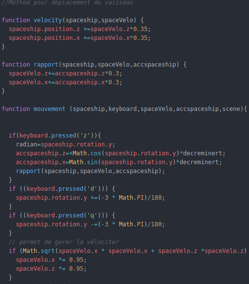

La Gestion des Mouvements
Ici, nous allons expliquer comment les déplacements sont gérer
Pour rappel, le mouvement des astéroids est prédéfini aléatoirement dans l'object lui même
De ce fait il me reste a expliquer le déplacement de notre Vaisseau, pour cela j'utilise trois fonctions :
- La première fonction mouvement() permet dans une premier temps :
- 1)D'incrémenter l'accélération du vaisseau en fonction du cosinus et du sinus(du vaisseau en Y) que l'on multiplie par une variable global qui décremente l'inertie. Puis on appel notre fonction deuxième fonction tout en appuyant sur la touche 'Z' du clavier
- 2)Lorsque l'on appuie sur 'd' on incrémente la rotation du vaisseau par spaceship.rotation.y +=(-3 * Math.PI)/180
- 3)Lorsque l'on appuie sur 'q' on incrémente la rotation du vaisseau par spaceship.rotation.y -=(-3 * Math.PI)/180
- Notre deuxième fonction rapport() permet d'incrémenter une vélocité pour notre vaisseau en fonction de accelration de celui ci
- Enfin notre dernière fonction velocity() qui prend en paramètre la vélocité du vaisseau. On integre cette fonction dans l'animate
<
Apres toutes ces explications voici un aperçu :

Le déplacement de notre Vaisseau étant terminé il nous reste plus qu'a l'armée pour la bataille